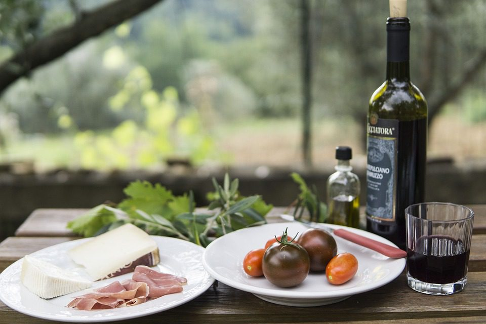
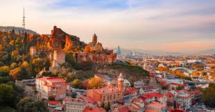
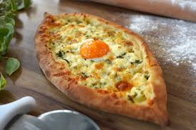
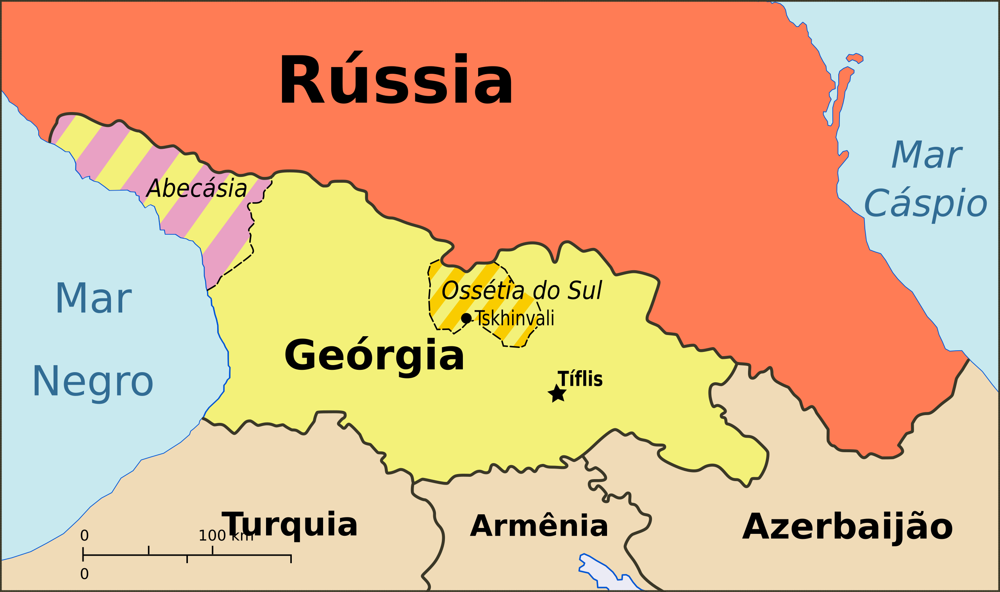

Bem-vindo à Geórgia
Descubra as maravilhas deste país fascinante localizado no Cáucaso, onde a história milenar se mistura com paisagens deslumbrantes e uma cultura rica e única.
História e Cultura
A Geórgia possui uma das culturas mais antigas do mundo, com mais de 3.000 anos de história. O país é conhecido por sua tradição vinícola, que remonta a 8.000 anos atrás, e por seu alfabeto único, um dos 14 alfabetos originais do mundo.
გამარჯობა (Gamarjoba) - Olá
მადლობა (Madloba) - Obrigado
ნახვამდის (Nakhvamdis) - Adeus
Cultura do Vinho e Queijo na Geórgia
A Geórgia é considerada o berço do vinho, com uma tradição vitivinícola que remonta a mais de 8.000 anos. Os georgianos desenvolveram um método único de fermentação em grandes ânforas de barro chamadas "qvevri", enterradas no solo — técnica reconhecida pela UNESCO como Patrimônio Cultural Imaterial. O vinho está profundamente enraizado no cotidiano e na hospitalidade do povo georgiano. Cada refeição importante é acompanhada de vinho e liderada por um "tamada", o mestre dos brindes. O queijo, por sua vez, também é parte essencial da culinária local. Existem diversos tipos artesanais, sendo os mais famosos o Sulguni, um queijo fresco e elástico, e o Tenili, feito com fios finos e maturado em creme. O vinho e o queijo juntos são mais do que alimentos: representam a identidade, história e união das famílias e comunidades georgianas.
Turismo
A Geórgia oferece uma variedade impressionante de atrações turísticas, desde as montanhas do Cáucaso até as praias do Mar Negro. A capital, Tbilisi, é uma mistura fascinante de arquitetura antiga e moderna.
Atrações Tbilisi, a capital da Geórgia, que mistura história, cultura e arquitetura
- Batumi, uma cidade moderna na costa do Mar Negro
- Mtskheta, a antiga capital histórica da Geórgia, sede da Igreja Ortodoxa Georgiana
- Kakheti, a região vinícola da Geórgia, com vinícolas locais
- Svaneti, uma região para aventureiros, com caminhadas, fortalezas medievais e desfiladeiros
Cultura
- Ali & Nino Statue, um monumento que representa um beijo em movimento
- Sítios históricos, alguns considerados Patrimônio Mundial da UNESCO
- Tradições da culinária, artesanato e música popular
Gastronomia
A culinária georgiana é uma das mais ricas e diversas do mundo, conhecida por pratos como khachapuri (pão recheado com queijo), khinkali (bolinhos recheados) e uma variedade de pratos com nozes e especiarias.
A imagem representa o Khachapuri (ხაჭაპური, em língua georgiana) é um pastel recheado com queijo, considerado uma das iguarias nacionais da Geórgia. É uma das primeiras iguarias que se oferecem a um convidado.[1] Pode também ser considerado um pão ou uma espécie de pizza. É preparado com uma massa de farinha de trigo com água, leite, levedura e óleo, que é transformada numa bola e deixada a levedar, antes de ser tendida da forma e tamanho desejados. Para além das variantes individuais, existem as regionais, entre as quais o “imeruli” (იმერული ხაჭაპური, em língua georgiana), ou khachapuri da Imerícia, de forma circular, geralmente servido em fatias; o “megruli” (მეგრული ხაჭაპური), de Mingrélia, circular e com queijo por cima; e o “ajaruli” ou “acharuli” (აჭარული ხაჭაპური) de Adjara com a forma duma gôndola, normalmente servido com um ovo cru e manteiga.
Fatos sobre a Geórgia
| Informação | Detalhe | Observação |
|---|---|---|
| Capital | Tbilisi | Fundada no século V |
| População | 3.7 milhões | Estimativa 2023 |
| Área | 69,700 km² | Comparável à Irlanda |
| Idioma | Georgiano | Alfabeto próprio |
| Moeda | Lari (GEL) | 1 GEL ≈ R$ 1.80 |